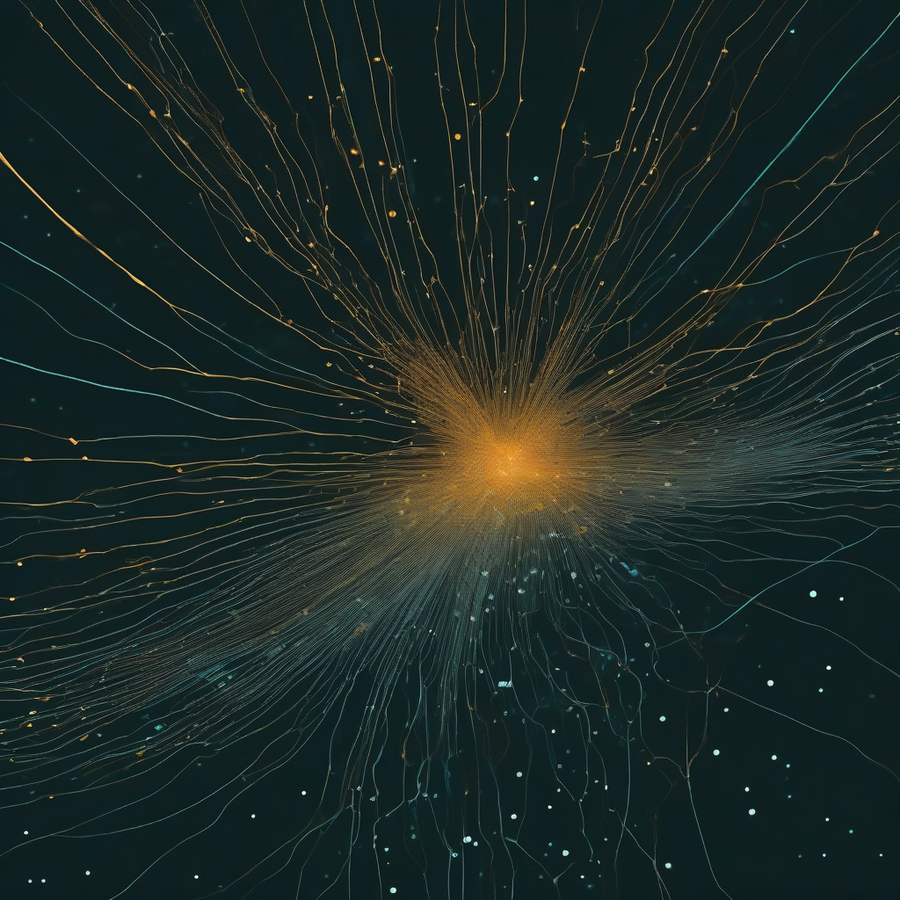
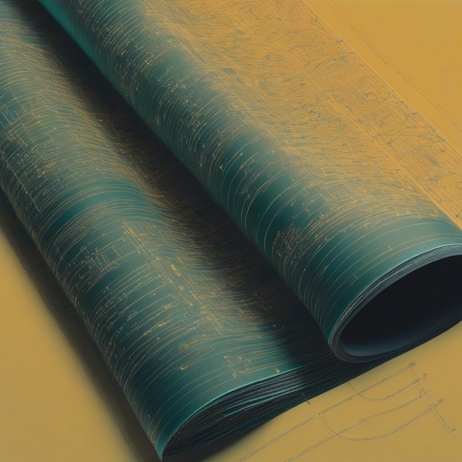

This site is the introduction to all of SuperInstance — a survey of the fleet, with demonstrations that run on this page, not screenshots of them.
Every demo below is served from this same site — same origin, no CDN embeds, no external players. What you see is the artifact.
The primary demo above: a show about a spreadsheet that thinks, with voice. Episodes 2 and 3 (draggable waveform, receipts on drag) are one directory over.
repo →quilt-studio's golden-ratio lift field: a floor you can pan across, exact integer geometry on an irrational base.
run it →Two paddles, one fitness curve, an evolutionary loop with witnesses on every generation.
run it →The ternary beat engine — a small instrument from the sims line, playable in the browser.
run it →Thirty repos, six lines, one line each — every claim checkable against the repo it names. The fleet has 4,800 public repositories; this door surveys, it cannot catalog.
Super Z's arcade: familiar games as a substrate for JEV judges, MOTH quantum coins, and JEPA prediction-reward — receipts rendered in the game UI. Built, not yet playtested; it earns a place on this door after its own lane.
The one equation the fleet keeps converging on, from months of vessels on heterogeneous hardware.
We ran vessels across ARM64, Jetson, RTX-class GPUs, and cloud. Different ships, different crews, different missions — 1,500+ crates, 6,600+ tests. The numbers kept landing on one relation:
Every agent trades one against the other. The budget doesn't move. The receipts are the evidence — and the receipts are the product.
